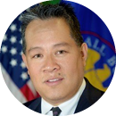

Small Business Administration 
Maximize Small Business Participation in Government Contracting
|  | Goal Leader: Robb N. Wong, Associate Administrator, Office of Government Contracting and Business Development |
Goal Statement: The SBA can help small businesses win Federal contracts set aside for them. By September 30, 2019, maximize the percent of federal contracts by exceeding the 23 percent awarded to small businesses.
Goal Action Plan & Progress Update: